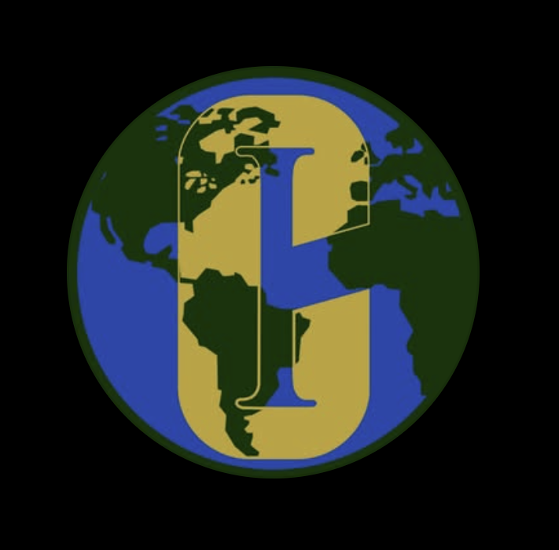
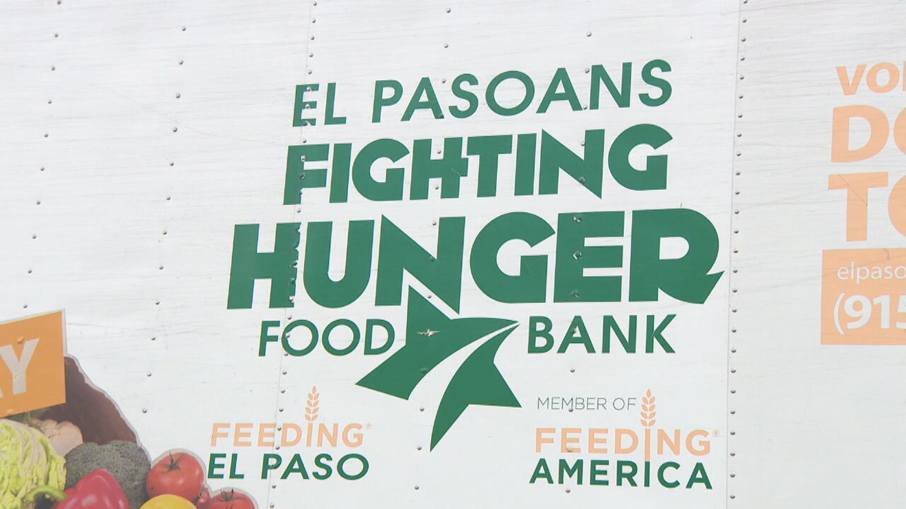

Service

Student-led Environmental Stewardship Initiative (SESI)
As a member of the Student-led Environmental Stewardship Initiative (SESI), I played an active role in promoting environmental awareness, particularly in the border region. Our club carried out various service projects focused on sustainability and conservation. One of our biggest projects involved securing and utilizing a $300 environmental grant to build a Hügelkultur mound at Keystone Heritage Park in El Paso, which helps improve soil health and promote biodiversity. Through this initiative and other activities like community cleanups and educational outreach, we worked to spread knowledge about sustainable practices and encouraged greater environmental responsibility within our local community.
Learn more

El Paso Fighting Hunger Food Bank
At the El Paso Fighting Hunger Food Bank, I volunteered to help distribute food to people and families in need, especially during critical times like the COVID-19 pandemic. Our efforts aimed to support the less fortunate by provided access to important essential food iterms and long-term supplies. Volunteering at the food bank allowed me to witness firsthand the impact of poverty and food insecurity in our community. Through teamwork and dedication, we provided much-needed relief to struggling families, fostering a stronger and more compassionate El Paso community. It was an amazing experience to be a helping hand and to know that I can make a personal impact in people lives, no matter how small.
Learn more